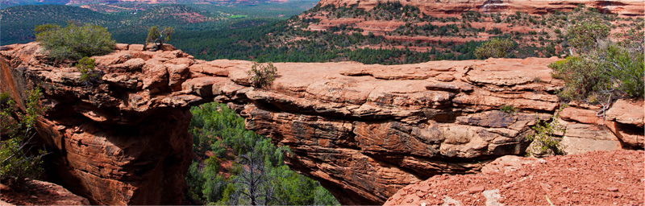

Краткая информация о Седоне

Седона — небольшой городок в Аризоне, заслуживающий большего!
Рассмотрим 5 причин, по которым Седона круче, чем гранд каньон!
Поиск гостиницы
Заинтересовались?
Укажите предполагаемые даты поездки,
и мы покажем вам лучшие предложения гостиниц в седоне
Преимущества
Настоящий городок
— №1 —
Седона — не аттракцион для туристов, там течёт своя жизнь

-
Жильё
Рекомендуем пожить в настоящем мотеле, всё как в кино!
-
Еда
Всегда заказывайте фирменный бургер, вы не разочаруетесь!
-
Сувениры
Не только китайского, но и местного производства!
Там есть
Мост дьявола
— №2 —
Да, по нему можно пройти! Если конечно вы осмелитесь
-
Небольшая площадь
— №3 —
Все достопримечательности находятся очень близко
-
Красивая дорога
— №4 —
Ехать в Седону из Лас-Вегаса совсем не скучно!
-
Мало туристов
— №5 —
Большинство едет в гранд каньон и толпится там